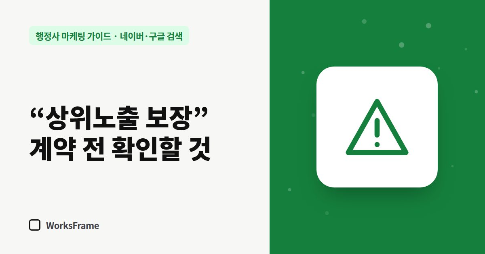

네이버·구글 검색
“상위노출 보장” 마케팅 업체, 계약 전에 확인할 것 — 행정사 사무소 편
한 줄 답
검색 순위는 누구도 보장할 수 없습니다. 가짜 리뷰·가짜 클릭이 들어가는지, 결과물과 계정이 사무소 것인지, 해지 조건은 어떤지 계약 전에 꼭 물어보세요.

업무신고를 하고 플레이스를 등록하면 “1페이지 보장”, “상위노출 보장” 전화가 오기 시작합니다. 모든 업체가 나쁜 것은 아니지만, 보장이라는 말에는 확인할 것이 많습니다.
순위는 누구도 보장할 수 없습니다
네이버와 구글의 검색 순위는 각 회사가 정하고, 기준도 계속 바뀝니다. 외부 업체가 순위를 “보장”한다면 둘 중 하나입니다. 짧게만 유지되는 방법을 쓰거나, 규칙을 어기는 방법을 쓰는 것입니다.
특히 조심할 방법
| 방법 | 위험 |
|---|---|
| 돈을 주고 쓰게 한 리뷰, 가짜 방문 리뷰 | 표시·광고 규정 위반 소지, 플랫폼 제재 |
| 프로그램·인력으로 만든 가짜 클릭·트래픽 | 플랫폼 정책 위반, 노출 제한 |
| 똑같은 글을 여러 블로그에 뿌리기 | 품질 낮은 문서로 평가 |
| 사무소 계정 비밀번호 요구 | 계정 도용·분실 위험 |
대가를 받고 쓴 추천·후기는 그 사실을 밝혀야 한다는 것이 공정거래위원회의 추천·보증 심사지침의 기본 취지입니다. 전문직 사무소에 가짜 후기가 발견되면 광고비보다 신뢰 손실이 훨씬 큽니다.
계약 전에 물어볼 질문
- 무엇을 하나요? — 작업 목록을 구체적으로 (글 몇 편, 어디에, 누가 쓰나)
- 리뷰나 방문을 만들어 내는 작업이 포함되나요?
- 순위가 안 나오면 어떻게 되나요? — 환불 조건
- 계정은 누구 명의로 운영하나요? — 비밀번호 대신 관리자 권한으로
- 매달 어떤 보고서를 받나요? — 실제 방문·문의 수를 보여 주는지
- 약정과 해지 조건은?
믿을 만한 곳의 신호
- 순위 대신 할 일과 과정을 약속한다
- 작업 결과물(글, 페이지)이 사무소 소유로 남는다
- 숫자를 있는 그대로 보고한다 — 줄었으면 줄었다고
자주 묻는 질문
이미 계약했는데 걱정됩니다.
작업 내용을 문서로 요청하고, 리뷰·트래픽 조작이 포함되어 있다면 중단을 요청하세요. 계정 비밀번호를 넘겼다면 바로 바꾸세요.
영업 전화를 줄이려면요?
플레이스 등록 후 한동안은 많이 옵니다. “필요하면 연락드리겠다”고 짧게 끊고, 문자로 받은 제안은 위 질문으로 걸러 보세요.